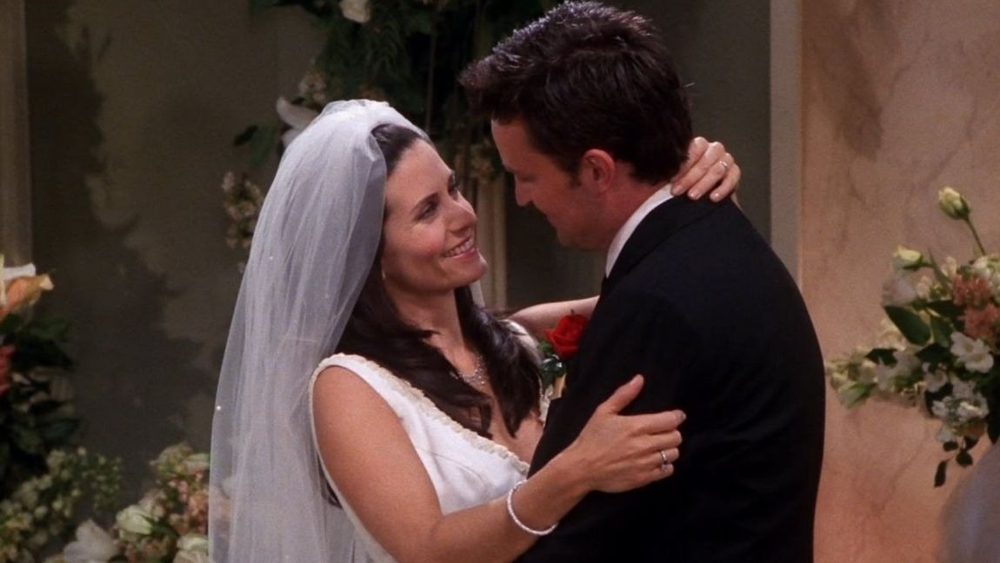
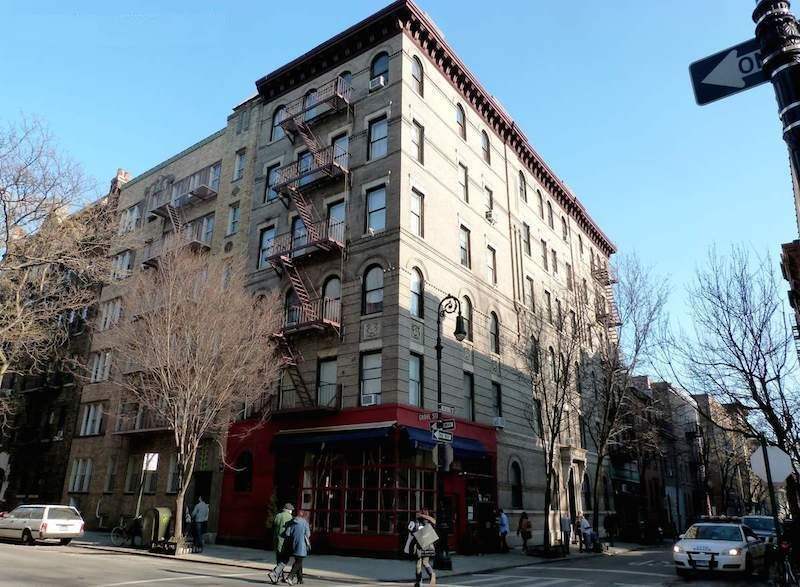

Similar reads



Friends Thanksgiving episodes are responsible for some of the best scenes and one liners from the hit show. From the episode where they all play football to the one where Monica puts a turkey on her head, it does not get better than when the crew is celebrating the holiday Chandler hates the most: Turkey Day.
And so, the best way to get into the Thanksgiving mood is to binge the sitcom while the turkey and side dishes are still in the oven. To help you prioritize your marathon, we went ahead and ranked every Friends Thanksgiving episode from best to worst — and by worst, we really mean still wildly entertaining just not as good as, say, The One With the Rumor. So go on and claim your spot on the sofa with some pre-turkey apps and enjoy!
Much of the episode revolves around everyone trying to keep Chandler, who has a lifelong fear of dogs, from finding out that Phoebe has been hiding a pup in the apartment for days. The best part just may be that the dog's name is Clunkers!
While watching a Thanksgiving parade on TV, Joey realizes he's supposed to be on the Days of Our Lives float, which sends him spiraling. To make things more interesting, Rachel's openly hostile sister Amy (Christina Applegate) shows up and puts everyone on edge during Thanksgiving dinner. Rest assured, things end on a positive note, even though Chandler and Monica's wedding china gets destroyed
As the show's first Thanksgiving episode ever, the plot revolves around each character being unable to spend the holiday with their families for various reasons. Rachel can't afford a plane ticket home, Joey's family is afraid of getting VD after seeing him on a poster advertising the disease, Chandler is adverse to the holiday because of his parents divorce, and Monica and Ross's parents are on vacation.
While it seriously pains us to watch Joey and Chandler fight, the idea of Chandler sitting in a box for six hours is seriously amusing. Besides that, there's Monica's very awkward run-in with Richard's son, who ends up coming to Thanksgiving dinner. This episode isn't very festive, but it sure is funny.
When the Geller parents decide to come over for Thanksgiving, Monica and Chandler have to figure out how to tell them they live together. Things get trickier though when the Gellers announce that they don't like Chandler because they think he smoked pot in college (even though in reality, it was Ross). The tense evening leads to Monica and Ross screaming secrets about each other to their parents, Rachel screwing up her dessert trifle, Phoebe declaring her love for Jacques Cousteau, and Joey announcing that he just wants to leave.
Competitive sports fans and football enthusiasts will especially appreciate Ross and Monica's intense rivalry over the sport. A few minutes into their pre-dinner game, Phoebe, Rachel, Joey, and Chandler quickly discovered why Monica and Ross's parents once banned them from playing the game together.
When Phoebe, Rachel, Ross, and Joey all come back an hour late for Thanksgiving dinner, Monica and Chandler refuse to let them in. While peeking their heads through Monica's door, Joey's head accidentally gets stuck. In an effort to free him, he ends up crashing into the Thanksgiving dinner that Monica made for everyone. Ultimately, Monica decides she's not that upset after receiving amazing news over the phone.
If you've ever had a Thanksgiving go horribly wrong, this is the episode for you. Together, the entire crew commiserates over their worst holiday experiences in a hilarious throwback episode that features Ross' Mr. Kotter mustache and Chandler's wild Flock of Seagulls hairstyle. The end of this episode includes one of the most memorable moments from the series – a.k.a. when Monica shows up with a turkey on her head in an attempt to make Chandler feel better.
There's so much going on in this episode that makes it the cream of the crop. A special visit from Monica's old friend Will Colbert (Brad Pitt) takes a hilarious turn for the worse when it's revealed that Will used to be in an "I Hate Rachel" club with Ross. To make matters funnier, high school rumors about Rachel (and Ross) resurface. Meanwhile, amid all of this drama is Joey, who is in the fight of his life trying to eat every morsel of the gigantic turkey Monica made.